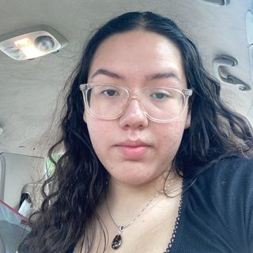

My First Webpage
My First Webpage
Jaylene Morales

During quarantine I did the usual: watched a ton of shows on Netflix and Disney +, binged all Star Wars movies, and started various hobbies, which most of them I gave up on. The only two I stuck with were photography and crocheting. A few months into quarantine I brought a Canon Camera to start my journey, I took most pictures outside or just of random items in my house. It wasn't until Halloween of last year were I began to take some photos of friends. I did not start crocheting until the beginning of this year in February and I have been doing it since. I have leanred different ways to do it and what to make out of it that I have begun to sell the items I make.